臺灣棗子專業圖鑑
臺北農產運銷公司內部培訓自主學習資料
印度棗 21 品種完整收錄 · 跨年產期甘特圖 · 北農 22 代號分級
臺灣市場所稱的「棗子」是印度棗（Ziziphus mauritiana Lam.），為鼠李科棗屬常綠果樹，原產印度、緬甸及中國雲南一帶，與中藥材、苗栗公館特產的中國棗（紅棗，Zizyphus jujuba Mill.）同屬不同種，兩者不可混為一談。
印度棗在日治時期即有栽培，經多年品種選育與栽培技術改進，品質甜脆多汁，現已成為臺灣南部重要特產。依農業統計年報，近十年全臺栽培面積約 1,955–2,469 公頃，年產量約 29,121–38,795 公噸。產地集中高雄燕巢、大社、阿蓮、岡山、田寮，屏東鹽埔、高樹、里港、九如，以及臺南關廟、楠西、嘉義竹崎等地。
目前主要栽培品種為中葉、三木、高雄 8 號珍寶、高雄 11 號珍蜜、高雄 12 號珍愛，市場占有率達九成以上。商業嫁接苗種植後約 6 個月即可正常開花結果，品種更替速度極快。
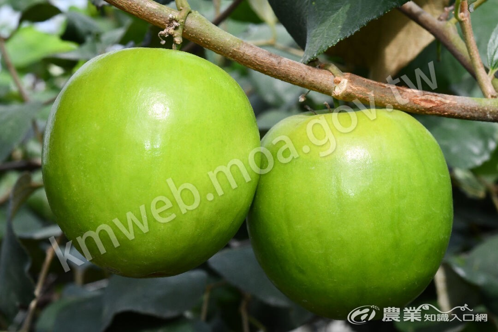
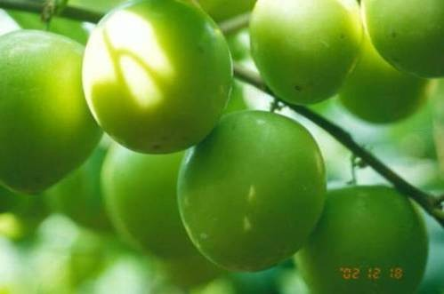
左：高雄 12 號珍愛 — 由珍寶芽條變異選育的農曆年前主力 ｜ 右：蜜棗 — 國內最重要、市面最常見的品種（圖：農業部農業知識入口網／高雄區農業改良場）
以單一產季年度呈現各品種供應時序，淺色為供應期、深色為盛產期。橫軸由當年度 1 月延伸至翌年 6 月，跨年產期可連續判讀。
棗子為典型跨年產期果品，11 月起早熟品種上市，農曆年前後 1–2 月為盛產高峰，晚熟品種可延至 4 月上旬。
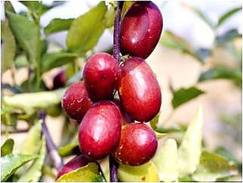
左：印度棗（青棗）— 青綠色、鮮食脆甜 ｜ 右：中國棗（紅棗）— 成熟轉紅褐、多作乾果與藥材（圖：農業部農業知識入口網）
| 項目 | 印度棗（青棗） | 中國棗（紅棗） |
|---|---|---|
| 學名 | Ziziphus mauritiana | Zizyphus jujuba |
| 植株 | 常綠果樹 | 落葉果樹 |
| 果實 | 青綠至淺黃、大果、甜脆多汁 | 青綠轉紅褐、小果 |
| 主要用途 | 鮮食為主，年節送禮水果 | 乾果、蜜餞、中藥材、鮮食 |
| 臺灣主要產地 | 高雄、屏東、臺南、嘉義 | 苗栗公館（占國產九成以上） |
| 產區 | 主要鄉鎮 | 產業定位 |
|---|---|---|
| 高雄市 | 燕巢、大社、阿蓮、岡山、田寮 | 核心產區，蜜棗與高雄系列育成重鎮 |
| 屏東縣 | 鹽埔、高樹、里港、九如 | 早熟產區，高朗系列發源地 |
| 臺南市 | 關廟、楠西 | 中南部供應帶 |
| 嘉義縣 | 竹崎 | 次要產區 |
官方歸納四類做法：選植早晚熟品種、主幹更新早晚、長梢修剪、主幹更新配合夜間照光。早熟品種（高朗 3 號、天蜜、翠蜜、高雄 3 號）宜於 2–3 月中旬前完成嫁接，8–9 月開花著果，1 月前採收結束；晚熟品種（玉冠、高雄 2 號、仙桃蜜棗）於 4 月以後嫁接、10–11 月著果，2 月底至 4 月上旬採收。
夜間燈照處理可讓產期提早至 9–11 月：1–3 月提早主幹更新，5–7 月夜間每公頃架設 70–120 盞 40W 日光燈，每夜照射 6–9 小時、處理 20–40 日。照光過久會使枝梢尾端及葉片變小，須視樹勢隨時關燈。
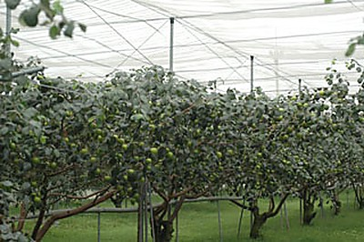
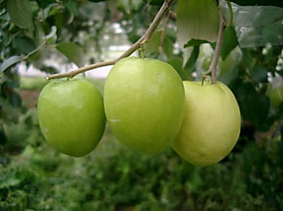
左：網室栽培的印度棗 ｜ 右：印度棗種原多樣性（圖：農業部農業知識入口網／高雄區農業改良場）
依農業部農業知識入口網「棗子家族」與高雄區農業改良場育種脈絡，收錄 21 個品種，分為三大類。
這 5 個品種為目前市場流通主力，合計占有率達九成以上。
主力栽培 · 5 品種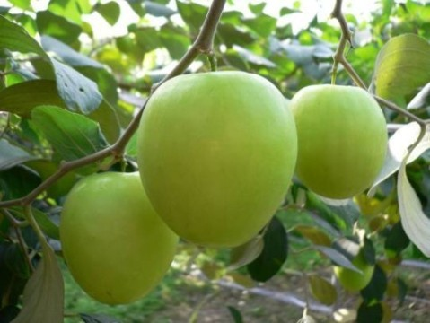
高雄區農業改良場與農試所鳳山分所育成命名，具完整性狀調查資料。
官方育成 · 7 品種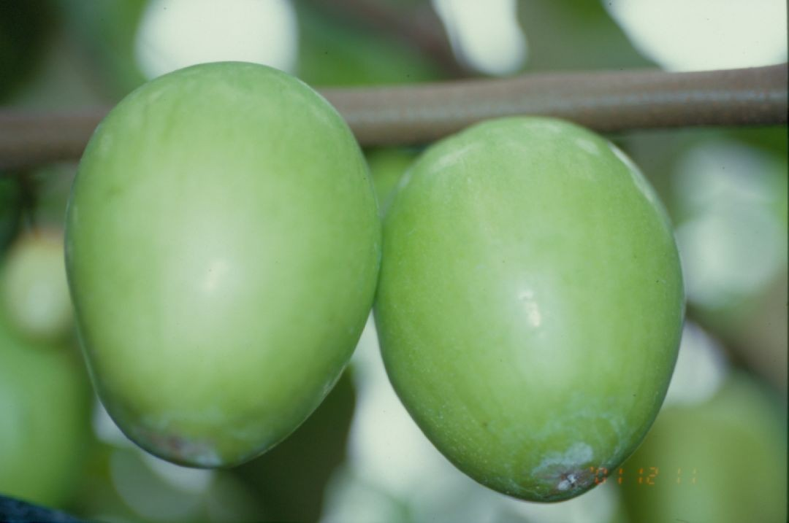
多由高朗 1 號、蜜棗的芽條變異或實生選種而來，品種更替速度快。
民間選育 · 9 品種蜜棗：國內最重要品種，市面所見棗子大多為此品種（圖：農業部農業知識入口網）
| 項目 | 特徵 |
|---|---|
| 產期 | 12 月下旬–3 月上旬 |
| 果重 | 90–120 g |
| 糖度 | 12–14 °Brix |
| 特徵 | 國內最重要品種，市面所見棗子大多為此品種。果肉細緻多汁、最受消費者喜愛，櫥架壽命約 6 日，盛產期在 1 月。 |
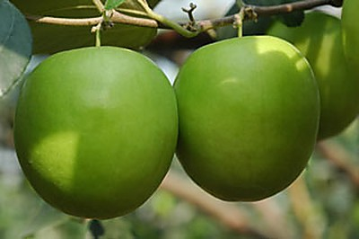
中葉蜜棗：生長勢較大葉蜜棗強，葉片大且無皺摺（圖：農業部農業知識入口網）
| 項目 | 特徵 |
|---|---|
| 產期 | 1–3 月 |
| 果重 | 120–150 g |
| 糖度 | 12–13 °Brix |
| 特徵 | 生長勢較大葉蜜棗強，葉片大且無皺摺。桃形、淺綠有光澤，肉質稍粗但著果佳，為主要經濟栽培品種之一。 |
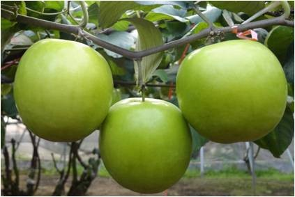
高雄 8 號珍寶：2011 年命名登記（圖：農業部農業知識入口網）
| 項目 | 特徵 |
|---|---|
| 產期 | 1 月上旬–3 月上旬 |
| 果重 | 93–150 g |
| 糖度 | 13.6–14.5 °Brix |
| 特徵 | 2011 年命名登記，扁圓形至圓形、外觀似青蘋果，綠色至淺綠色，櫥架壽命約 2–4 日，農曆年前高品質主力。 |
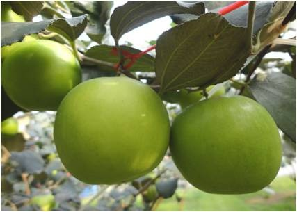
高雄 11 號珍蜜：多汁爆漿，又名爆漿蜜棗，為目前農曆年後的主力品種（圖：農業部農業知識入口網）
| 項目 | 特徵 |
|---|---|
| 產期 | 1–3 月 |
| 果重 | 110–150 g |
| 糖度 | 12–15 °Brix |
| 特徵 | 多汁爆漿，又名爆漿蜜棗，為目前農曆年後的主力品種。 |
高雄 12 號珍愛：2016 年高雄場與大社區農友合作，自高雄 8 號珍寶芽條變異選育（圖：農業部農業知識入口網）
| 項目 | 特徵 |
|---|---|
| 產期 | 1 月上旬–3 月上旬 |
| 果重 | 110–150 g |
| 糖度 | 12–15 °Brix |
| 特徵 | 2016 年高雄場與大社區農友合作，自高雄 8 號珍寶芽條變異選育。卵圓形、翠綠色，甜脆多汁、櫥架壽命長，生育日數較珍寶多 10–15 日。 |
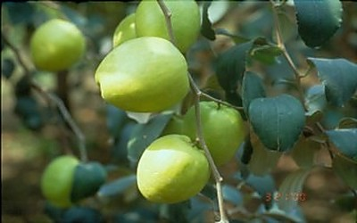
高雄 2 號春蜜：由高朗 1 號天然授粉實生苗選育，90 年 3 月命名（圖：農業部農業知識入口網）
| 項目 | 特徵 |
|---|---|
| 產期 | 3 月 |
| 果重 | 盛產期 130–150 g |
| 糖度 | — |
| 特徵 | 由高朗 1 號天然授粉實生苗選育，90 年 3 月命名。於主流品種 12–2 月採收後的 3 月生產，可延長印度棗產期；果實碩大、櫥架壽命達 7 日。 |
高雄 3 號黃金蜜棗：優質早熟種，圓錐形或桃形、外觀金黃，果尖常有小斑點（圖：農業部農業知識入口網）
| 項目 | 特徵 |
|---|---|
| 產期 | 12 月–3 月上旬 |
| 果重 | 80–100 g |
| 糖度 | 13–15 °Brix |
| 特徵 | 優質早熟種，圓錐形或桃形、外觀金黃，果尖常有小斑點。特級品糖度可達 20 度，果皮轉金黃時仍甜脆，與一般品種轉黃即過熟不同。 |
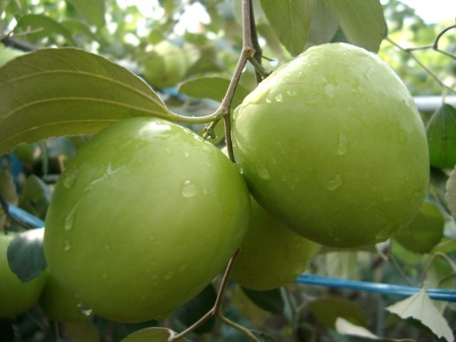
高雄 5 號青蜜：圓柱形至長圓形，果蒂周圍呈方形，成熟果綠色（圖：農業部農業知識入口網）
| 項目 | 特徵 |
|---|---|
| 產期 | 12–3 月 |
| 果重 | 95–135 g |
| 糖度 | 12–14 °Brix |
| 特徵 | 圓柱形至長圓形，果蒂周圍呈方形，成熟果綠色。果皮厚、果肉脆而多汁爽口，果汁率 71–74%，櫥架壽命約 4–5 日。 |
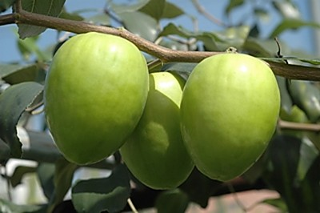
高雄 6 號甜心：卵圓至圓錐形、淡綠色，種子小、果肉率高，果皮薄、果肉細緻爽口無留皮感，櫥架壽命約 4–6 日（圖：農業部農業知識入口網）
| 項目 | 特徵 |
|---|---|
| 產期 | 1 月–翌年 3 月 |
| 果重 | 90–130 g |
| 糖度 | 12–13.5 °Brix |
| 特徵 | 卵圓至圓錐形、淡綠色，種子小、果肉率高，果皮薄、果肉細緻爽口無留皮感，櫥架壽命約 4–6 日。 |
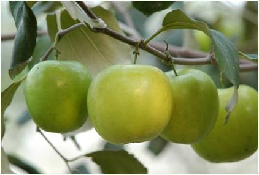
高雄 7 號櫻桃：2011 年高雄場選育的早熟品種（圖：農業部農業知識入口網）
| 項目 | 特徵 |
|---|---|
| 產期 | 12–2 月 |
| 果重 | 57–93 g |
| 糖度 | 13.5–15.8 °Brix |
| 特徵 | 2011 年高雄場選育的早熟品種，圓至圓錐形似櫻桃，淡綠至黃綠、果皮光滑，嗜口性極佳，5 年生植株平均產量 70–90 公斤。 |
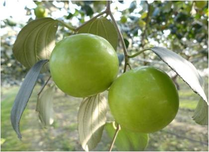
高雄 10 號玉寶：果實扁圓形、黃綠色，果肉細緻，屬晚熟品種（圖：農業部農業知識入口網）
| 項目 | 特徵 |
|---|---|
| 產期 | 1 月下旬–3 月下旬 |
| 果重 | 80–110 g |
| 糖度 | 12–15 °Brix |
| 特徵 | 果實扁圓形、黃綠色，果肉細緻，屬晚熟品種。 |
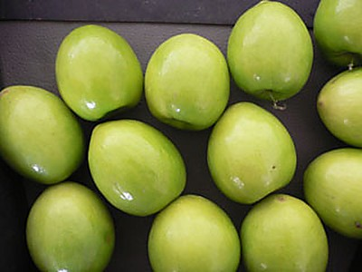
台農 4 號青龍：96 年農試所鳳山分所選育，為蜜棗（母本）與翠蜜棗（父本）雜交育成（圖：農業部農業知識入口網）
| 項目 | 特徵 |
|---|---|
| 產期 | 1 月–3 月下旬 |
| 果重 | 140–160 g |
| 糖度 | 13–15 °Brix |
| 特徵 | 96 年農試所鳳山分所選育，為蜜棗（母本）與翠蜜棗（父本）雜交育成。外觀綠色具光澤、果實圓形、肉質細緻，5 年生每棵平均產量 120–160 公斤。 |
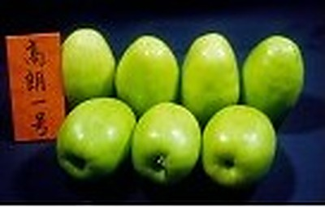
高朗 1 號（五十種）：早熟品種，卵圓形、果蒂周圍方圓，果皮光滑黃綠（圖：農業部農業知識入口網）
| 項目 | 特徵 |
|---|---|
| 產期 | 11 月下旬–2 月 |
| 果重 | 100–130 g |
| 糖度 | 11–12 °Brix |
| 特徵 | 早熟品種，卵圓形、果蒂周圍方圓，果皮光滑黃綠。屬大果，果肉細緻爽口但較鬆軟，櫥架壽命約 5 日。 |
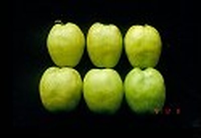
高朗 2 號（台農 1 號）：鹽埔鄉農友自高朗 1 號芽條變異選出（圖：農業部農業知識入口網）
| 項目 | 特徵 |
|---|---|
| 產期 | 11 月下旬–2 月 |
| 果重 | 120–140 g |
| 糖度 | 10–12 °Brix |
| 特徵 | 鹽埔鄉農友自高朗 1 號芽條變異選出，88 年由鳳山園藝試驗分所協助調查性狀並命名台農 1 號。長扁圓形、果皮有稜起，肉質較粗糙，櫥架壽命約 6 日。 |
高朗 3 號：高朗 1 號芽條變異選出（圖：農業部農業知識入口網）
| 項目 | 特徵 |
|---|---|
| 產期 | 11 月–2 月 |
| 果重 | 100–130 g |
| 糖度 | 10–12 °Brix |
| 特徵 | 高朗 1 號芽條變異選出。果型似長橢圓形的翠蜜，外觀飽滿光滑、清甜多汁，屬早熟且櫥架壽命長，盛產期在 1 月。 |
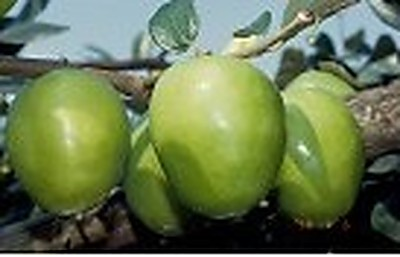
翠蜜：果型似長橢圓形的高朗 1 號，外觀飽滿光滑、清甜多汁，櫥架壽命長（圖：農業部農業知識入口網）
| 項目 | 特徵 |
|---|---|
| 產期 | 11 月–2 月 |
| 果重 | 100–130 g |
| 糖度 | 10–12 °Brix |
| 特徵 | 果型似長橢圓形的高朗 1 號，外觀飽滿光滑、清甜多汁，櫥架壽命長。 |
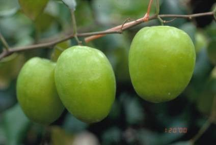
天蜜：外觀似翠蜜但果型較狹長，果皮有光澤，甜脆多汁、耐掛樹耐貯放，中晚熟，盛產期在 1 月（圖：農業部農業知識入口網）
| 項目 | 特徵 |
|---|---|
| 產期 | 12 月–2 月 |
| 果重 | 100–130 g |
| 糖度 | 11–13 °Brix |
| 特徵 | 外觀似翠蜜但果型較狹長，果皮有光澤，甜脆多汁、耐掛樹耐貯放，中晚熟，盛產期在 1 月。 |
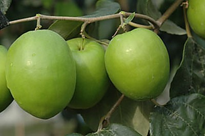
大葉蜜棗：蜜棗芽條變異選出（圖：農業部農業知識入口網）
| 項目 | 特徵 |
|---|---|
| 產期 | 1–3 月 |
| 果重 | 130–180 g |
| 糖度 | 12–13 °Brix |
| 特徵 | 蜜棗芽條變異選出。生長勢弱、葉片大有皺摺，桃形淺綠有光澤，肉質較蜜棗粗、著果較差。 |
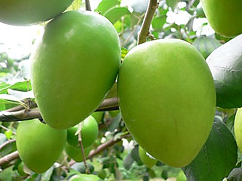
金桃蜜棗：蜜棗芽變，生長勢強（圖：農業部農業知識入口網）
| 項目 | 特徵 |
|---|---|
| 產期 | 2 月上旬–4 月上旬 |
| 果重 | 100–120 g |
| 糖度 | 11–12 °Brix |
| 特徵 | 蜜棗芽變，生長勢強。早期果桃形、晚期果圓錐形，果皮較蜜棗厚，較蜜棗晚熟可分散產期。 |
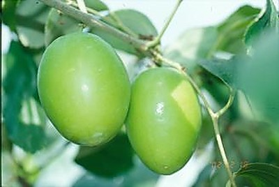
仙桃蜜棗：蜜棗芽變，品質類似蜜棗但櫥架壽命與掛樹期稍短（圖：農業部農業知識入口網）
| 項目 | 特徵 |
|---|---|
| 產期 | 2 月上旬–3 月下旬 |
| 果重 | 50–120 g |
| 糖度 | 13–15 °Brix |
| 特徵 | 蜜棗芽變，品質類似蜜棗但櫥架壽命與掛樹期稍短。早期果桃形、晚期果紡垂形，果尖易黃化，盛產 3 月，農曆年後才上市。 |
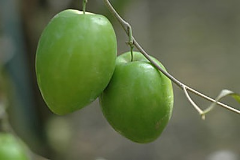
翠香：94 年高雄縣燕巢鄉農友選育，生長勢弱、開花 9–11 月，屬晚熟品種（圖：農業部農業知識入口網）
| 項目 | 特徵 |
|---|---|
| 產期 | 2 月上旬–4 月上旬 |
| 果重 | — |
| 糖度 | — |
| 特徵 | 94 年高雄縣燕巢鄉農友選育，生長勢弱、開花 9–11 月，屬晚熟品種。早期果桃形、晚期果紡垂形，品質似仙桃蜜棗，惟櫥架壽命及掛樹期較蜜棗短。 |
| 品種 | 產期 | 果重 | 糖度 | 熟期 | 辨識重點 |
|---|---|---|---|---|---|
| 蜜棗 | 12 月下旬–3 月上旬 | 90–120 g | 12–14 °Brix | 主力 | 國內最重要品種 |
| 中葉蜜棗 | 1–3 月 | 120–150 g | 12–13 °Brix | 主力 | 生長勢較大葉蜜棗強 |
| 高雄 8 號珍寶 | 1 月上旬–3 月上旬 | 93–150 g | 13.6–14.5 °Brix | 主力 | 2011 年命名登記 |
| 高雄 11 號珍蜜 | 1–3 月 | 110–150 g | 12–15 °Brix | 主力 | 多汁爆漿 |
| 高雄 12 號珍愛 | 1 月上旬–3 月上旬 | 110–150 g | 12–15 °Brix | 主力 | 2016 年高雄場與大社區農友合作 |
| 高雄 2 號春蜜 | 3 月 | 盛產期 130–150 g | — | 晚熟 | 由高朗 1 號天然授粉實生苗選育 |
| 高雄 3 號黃金蜜棗 | 12 月–3 月上旬 | 80–100 g | 13–15 °Brix | 早熟 | 優質早熟種 |
| 高雄 5 號青蜜 | 12–3 月 | 95–135 g | 12–14 °Brix | 中熟 | 圓柱形至長圓形 |
| 高雄 6 號甜心 | 1 月–翌年 3 月 | 90–130 g | 12–13.5 °Brix | 中熟 | 卵圓至圓錐形、淡綠色 |
| 高雄 7 號櫻桃 | 12–2 月 | 57–93 g | 13.5–15.8 °Brix | 早熟 | 2011 年高雄場選育的早熟品種 |
| 高雄 10 號玉寶 | 1 月下旬–3 月下旬 | 80–110 g | 12–15 °Brix | 晚熟 | 果實扁圓形、黃綠色 |
| 台農 4 號青龍 | 1 月–3 月下旬 | 140–160 g | 13–15 °Brix | 晚熟 | 96 年農試所鳳山分所選育 |
| 高朗 1 號（五十種） | 11 月下旬–2 月 | 100–130 g | 11–12 °Brix | 早熟 | 早熟品種 |
| 高朗 2 號（台農 1 號） | 11 月下旬–2 月 | 120–140 g | 10–12 °Brix | 早熟 | 鹽埔鄉農友自高朗 1 號芽條變異選出 |
| 高朗 3 號 | 11 月–2 月 | 100–130 g | 10–12 °Brix | 早熟 | 高朗 1 號芽條變異選出。果型似長橢圓形的翠蜜 |
| 翠蜜 | 11 月–2 月 | 100–130 g | 10–12 °Brix | 早熟 | 果型似長橢圓形的高朗 1 號 |
| 天蜜 | 12 月–2 月 | 100–130 g | 11–13 °Brix | 中熟 | 外觀似翠蜜但果型較狹長 |
| 大葉蜜棗 | 1–3 月 | 130–180 g | 12–13 °Brix | 中熟 | 蜜棗芽條變異選出。生長勢弱、葉片大有皺摺 |
| 金桃蜜棗 | 2 月上旬–4 月上旬 | 100–120 g | 11–12 °Brix | 晚熟 | 蜜棗芽變 |
| 仙桃蜜棗 | 2 月上旬–3 月下旬 | 50–120 g | 13–15 °Brix | 晚熟 | 蜜棗芽變 |
| 翠香 | 2 月上旬–4 月上旬 | — | — | 晚熟 | 94 年高雄縣燕巢鄉農友選育 |
資料來源：農業部農業知識入口網「棗子家族」各品種條目。標「—」者為官方條目未載數值。
棗子在北農果菜品名代碼表中以數字代號 22 表示，分級包裝規格的適用範圍為蜜棗。拍賣實務以品名代號區分貨件，並與統一編碼、等級、大小規格共同構成交易標示。
| 品名代號 | 品名 | 語音查詢碼 | 備註 |
|---|---|---|---|
| 22 | 棗子（國產） | 080022 | 適用範圍：蜜棗；統一編碼 2030400000223 |
| 229 | 棗子（進口） | 080229 | 進口貨件 |
| 829 | 蜜棗（進口） | 080829 | 代號表另列於 82 類項下 |
| 等級 | 品質標準 |
|---|---|
| 特級 | 同一品種，成熟適度，果形完整，色澤優良，果面光滑，外觀無瑕疵 |
| 優級 | 同一品種，成熟尚適度，果形完整，色澤良好，果面尚光滑，外觀輕微瑕疵 |
| 良級 | 品質次於優級品，具有商品價值者 |
| 規格 | 果重範圍 |
|---|---|
| 精品 4L | 375 公克以上 |
| 精品 3L | 300 公克以上，未達 375 公克 |
| 特大 2L | 225 公克以上，未達 300 公克 |
| 大 L | 190 公克以上，未達 225 公克 |
| 中 M | 150 公克以上，未達 190 公克 |
| 小 S | 未達 150 公克 |
| 項目 | 規格 |
|---|---|
| 容器 | 紙箱（外徑）十號箱 45×30×20 公分，2 子盒，可微調內縮 1–2 公分 |
| 淨重 | 6 公斤 |
| 包裝前 | 適時採收、修整清潔，果梗勿超過果肩；按相同等級及大小規格分級 |
| 包裝時 | 每粒使用舒果套，箱底鋪設柔軟襯墊物，整齊排放；裝箱需紮實，不得使用封箱釘 |
| 箱面標示 | 市場別、供應單位（人）、供應代號、品名、等級、規格、淨重及件數須填寫完備 |
| 級次 | 單果重（臺兩） | 公克 | 市場定位 |
|---|---|---|---|
| S 級 | 二兩半～三兩 | 94–113 g | 外銷主力 |
| M 級 | 三兩～三兩半 | 113–132 g | 外銷主力 |
| L 級 | 三兩半～四兩 | 132–150 g | 外銷主力 |
| XL 級 | 四兩以上 | 150 g 以上 | 大果禮盒 |
內銷紙箱主要為 15 公斤或 12 公斤裝，外銷採三層瓦楞紙箱每箱 6 公斤。分級後逐果套上泡棉（舒果套）防止擦壓傷，紙箱內襯 PE 塑膠袋但不封口，僅扭口塞入箱內縫隙後封箱。
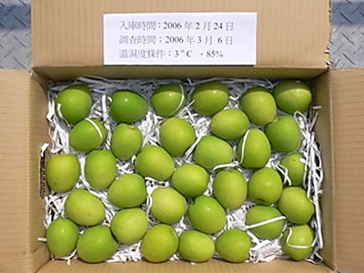
逐果套網、重量分級後的裝箱方式（圖：農業部農業知識入口網）
| 項目 | 內銷 | 外銷 |
|---|---|---|
| 採收成熟度 | 8–9 分熟 | 7–8 分熟（蜜棗約花後 120–127 天） |
| 果皮外觀 | 翠綠至黃綠 | 翠綠，轉黃者不適合外銷 |
| 預冷 | 一般不預冷，分級後迅速上市 | 5 ℃ 冷藏庫預冷，貯運避免回溫 |
| 貯藏 | 室溫 25 ℃ 櫥架約 4 日；家用冰箱冷藏可保存約 2 週 | 1–3 ℃ 可貯放 2–4 週，對乙烯敏感可加乙烯吸收劑 |
成熟度愈高糖度愈高、色澤愈黃，但愈不耐貯運。田間採收後勿曝曬，應置陰涼處並剔除黃熟果與病蟲鳥害果，尤其遭東方果實蠅為害的果實須裝袋攜離田間。
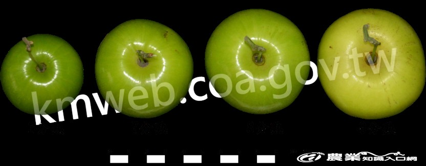
不同採收成熟度的果色比較：翠綠至黃綠之間最適口（圖：農業部農業知識入口網）
| 觀察指標 | 品質佳 | 品質較差 |
|---|---|---|
| 果色 | 八分熟翠綠至九分熟黃綠 | 全黃過熟、褐斑、脫水皺皮 |
| 果柄周圍 | 光滑平順無皺摺 | 有皺摺 |
| 果蒂 | 寬廣且凹陷深 | 果蒂突起 |
| 果皮 | 光滑、有光澤、無壓傷 | 擦壓傷、病斑、裂果 |
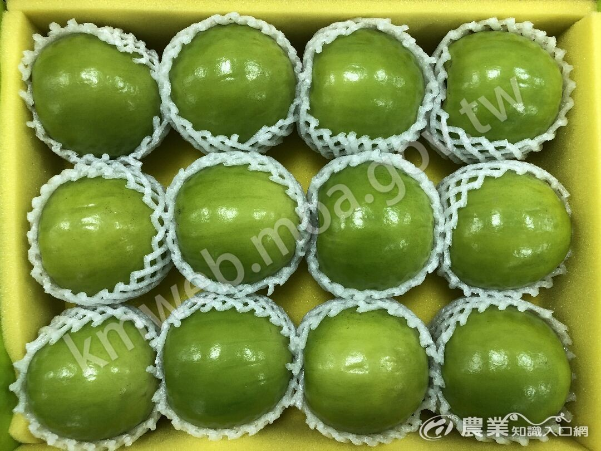
評鑑會中的套網果品，果形整齊、色澤一致為高分關鍵（圖：農業部農業知識入口網）
北農分級包裝：果菜品名代碼表（水果類） ｜ 棗子 22 分級包裝
照片版權屬農業部農業知識入口網及高雄區農業改良場，僅供內部教育訓練識別使用。品種照片依官方條目逐一對應，未以他品種照片替代。